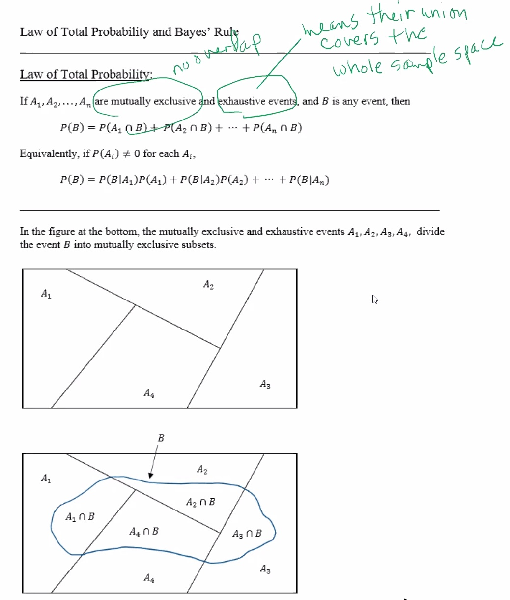
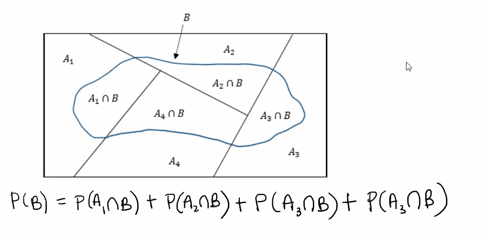
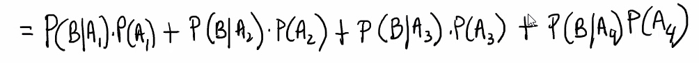
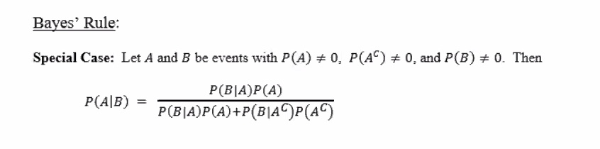
Bayes' rule provides a formula that allows us to calculate one of the conditional probabilities if we know the other one.
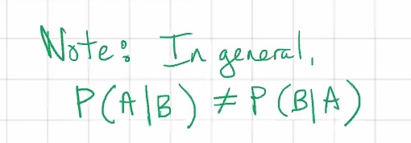
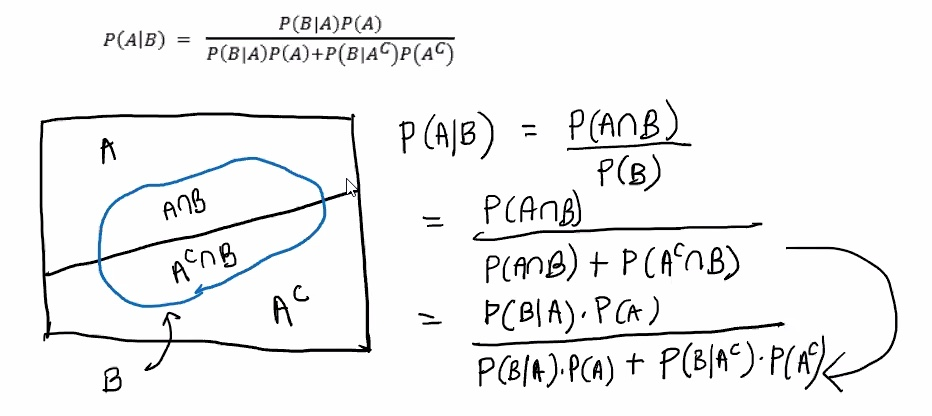
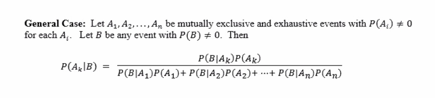
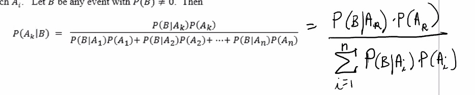
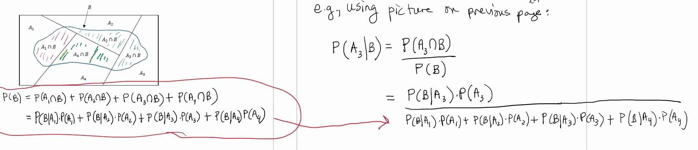
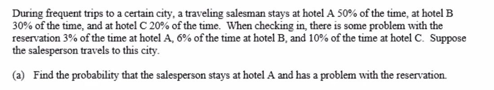
Let
We are looking for
So:
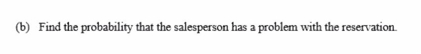
We are looking for
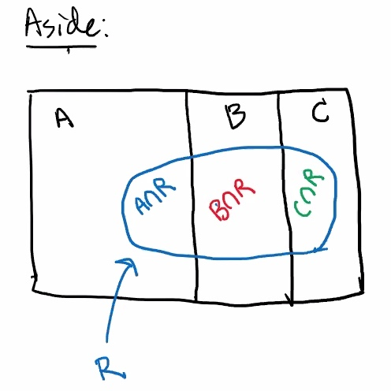
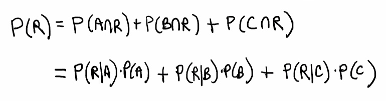
This uses the law of total probability.
So 5.3% of the time the saleman has a problem with the reservation.
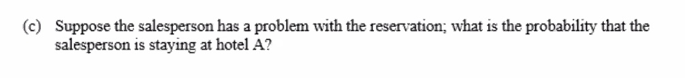
We are looking for
Remember:
So we can use values from the last 2 problems:
A random variable assigns a numerical value to each outcome in a sample space (typically denoted by capital letters, like
When a balanced coin is tossed three times, 8 equally likely outcomes are possible:
HHH
HHT
HTH
HTT
THH
THT
TTH
TTT
Let
So